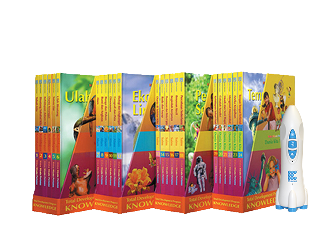

WIDYA WIYATA PERTAMA (WWP)

Widya Wiyata Pertama (WWP) adalah buku yang menyajikan pengetahuan yang bernilai pada anak pada tingkat pemahaman secara jelas dan tepat, disertai dengan humor dan imajinasi. Atau bisa dikatakan Widya Wiyata Pertama (WWP) adalah ensiklopedi yang menggunakan bahasa anak-anak, bukan bahasa data (yang biasanya lebih merepotkan orangtua untuk menterjemahkan dalam bahasa anak-anak lagi).
Proses Belajar Interaktif di Widya Wiyata Pertama (WWP)
★ Buku-buku ini mengubah kegiatan membaca menjadi pengalaman belajar orangtua dan anak melalui kegiatan tanya jawab.
Pertanyaan Sesungguhnya
★ Pertanyaan yang sama yang dilontarkan anak Anda terus-menerus. Buku ini mengembangkan rasa ingin tahu anak menjadi pengalaman belajar yang sesungguhnya dan pengalaman membaca yang menyenangkan bagi Anda dan putra-putri Anda.
★ Widya Wiyata Pertama (WWP) Seri 1 = 7 Buku
★ Widya Wiyata Pertama (WWP) Seri 2 = 6 Buku
★ Widya Wiyata Pertama (WWP) Seri 3 = 6 Buku
★ Widya Wiyata Pertama (WWP) Seri 4 = 6 Buku
Total Widya Wiyata Pertama (WWP) Lengkap = 25 Buku + Rocket Pen
Apa manfaat Widya Wiyata Pertama (WWP) bagi anak Anda?
★ Menyediakan pengetahuan dari 4 bagian : Kehidupan, Alam, Ilmu Pengetahuan, dan Dunia kita.
★ Merangsang rasa ingin tahu
★ Menjawab pertanyaan
★ Membangun kebiasaan membaca
★ Mengembangkan kecintaan akan belajar
Feature Widya Wiyata Pertama (WWP)
Buku :
★ Format Tanya jawab
★ Lebih dari 1000 pertanyaan dan 10.000 file bunyi (bila menghadirkan 24 Buku)
★ Pedoman Orang Tua
Rocket Mini